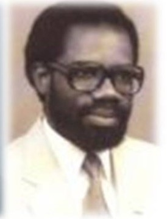

ONDE TUDO COMEÇOU...
O Agrupamento nº 63 situado na Paróquia de Nossa Senhora da Conceição /Sé-Catedral/Sumbe é um rebento do desenvolver deste imenso movimento mundial que é o Escutismo fundado por Badem Powell. A Agrupamento 63 é parte da Associação de escuteiros de Angola ligado a Junta regional Kuanza Sul.
Começou a dar os seus primeiros passos em 1997 nos esforços imorredoiros, daqueles que consideramos Kabouqueiros deste agrupamento onde encontramos as figuras de Abel Gil Tómas (Primeiro Chefe do Agrupamento) e o Padre Francisco César Viana (Primeiro Assistente do Agrupamento).
Hoje o agrupamento procura caminhar rumo ao desenvolvimento, apesar de ainda não alcaçar os seus objectivos antes preconizados. Tais passam pela melhoriana qualidade da formação, uniformização do agrupamento, a sede do Agrupamento, a consciencialização dos escuteiros no pagamento das quotas entre tantas coisas.
Mas mesmo assim o agrupamento não para. E acreditando na força de levantar-se após a queda, e como dizia um bispo africano Monsenhor Mosengó mesmo estando em golgóta a ressureição é possivel
e servindo -se do apelo constante de Cristo " Vinde a mim todos que andais cansados e oprimidos eu vos aliviarei" existe um esforço fraterno entre dirigentes e escuteiros para melhoramos o nosso mundo.
Fonte: Jelson Pimentel
Blog do Agrupamento 63
HISTÓRIA DO AGRUPAMENTO 63
O GÉNESIS
A história do aparecimento do agrupamento Nº 63 de escuteiros, da sé Catedral esta ligada ao projecto de evangelização e o encanto pelo dinamismo juvenil. Ideias de pessoas diferentes que Unidas que unidas acabou por ser a essência do proprio escutismo na Sé-Catedral. Trata-se do Padre César Viana (de feliz memória) e Abel Francisco Gil Tómas que começaram por caminhos diferentes para unir-se mais tarde num projecto de evangelização.
Tudo começou quando o Padre César sentiu a necessidade de haver mais movimentos e não apenas Acólitos para possibilitar livre escolha dos jovens no enquadramento dos movimentos religiosos. Abel Gil Tómas após uma visita a Benguela presenciou uma actividade daquela Diocese adimirando-se pelo dinamismo com que os escuteiros serviram na Missa, pensou que deveria haver um grupo semelhante na Sé-Catedral do Sumbe.
No primeiro encontro do Bispo Dom Benedito Roberto (de feliz memória) com os Jovens da Sé-Catedral na Páscoa Jovem de 1996, Abel Gil Tómas põe a precupação no Bispo. Amigavelemente o Senhor Bispo respondeu que depende da vontade e organização da propria juventude. Surpreendentemente para Abel Gil Tómas, em 1997, o Padre César a fazer um alistamento para criação do movimento escuta na Paróquia. Aliando-se também ao projecto do Padre e como a união faz a força mais jovens apareceram, e de lá para cá o Agrupamento N.º 63 jamais parou.
A 13 de Dezembro de 1998 aconteceram as primeiras promessas do agrupamento tendo integrado os seguintes jovens:
CHEFES:
- Abel Francisco Gil Tómas - Primeiro Chefe do Agrupamento
- Padre César Viana - Primeiro Assistente Espiritual do Agrupamento
- Irmã Margarida - Assistente Espiritual
- Irmã Silvina - Assistente
- Irmã Paula - Assitente
- Chefe Felipe
- Chefe Mingo
- Chefe Agostinho Miquinho
CAMINHEIROS CONTEMPLADOS:
- Riquidino
- Toya
- Adelina Jamba
- Morais José Caihenda
EXPLORADOR SÉNIOR:
- Mohamed Lopes (Déde - de feliz memória)
O MARCO
O dia 21 de Março de 1999 veio a ficar na história escutista do agrupamento quando um grupo de mais de 120 escuteiros obrigavam-se em consciência na sua promessa de escuta num acampamento que decorreu na horta do tio Xavier junto ao bairro E-15 na cidade do Sumbe e foram convidados os escuteiros da Gabela. Por unanimidade de opinião, comtemplou-se o dia 21 de Março como dia do agrupamento por ser a data em que se fizeram promessas de Lobitos a Dirigentes constituindo-se desta forma um verdadeiro Agrupamento conforme orienta o regulamento da AEA (Associação de Escuteiros de Angola).
Nestes quase 25 anos de caminhada, perduram na memória dos mais antigos as lembranças marcantes dos acampamentos, das duas primeiras promessas, a caminhada para o Quicombo no dia 11 de Novembro de 1998 a caminhada para barragem da saça onde o caminheiro Santiago por um fio afogava-se, a grande aventura de caminhar para Porto Amboim (62 Km de distância) bem como a apoio que prestavamos a delegação da Saúde nas campanhas de Vacianção contra polio Sempre a servir com Sorriso nos lábios. Estas actividades sempre bem acompanhadas das animações do caminheiro Chambula e das danças do caminheiro Betinho serão sempre memoráveis.